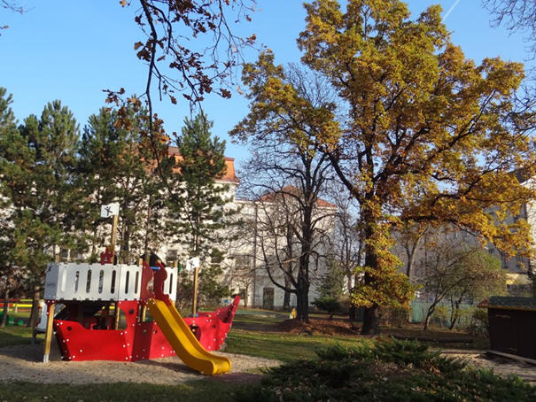
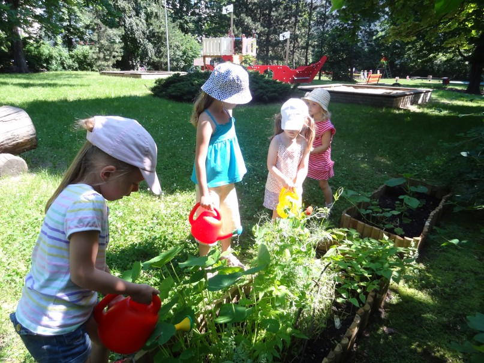
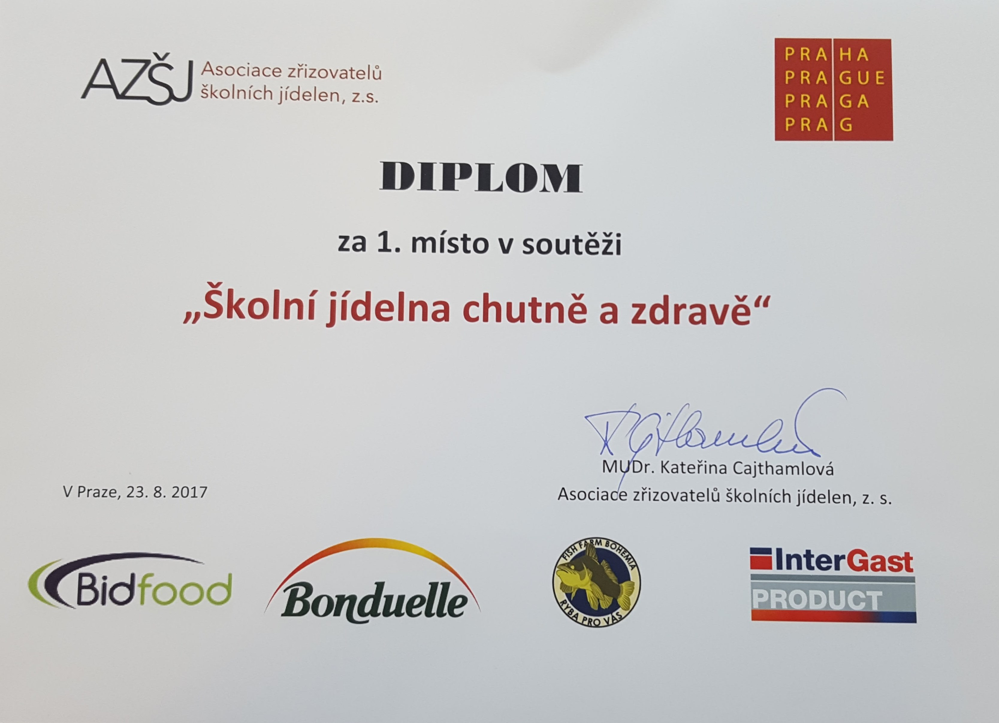
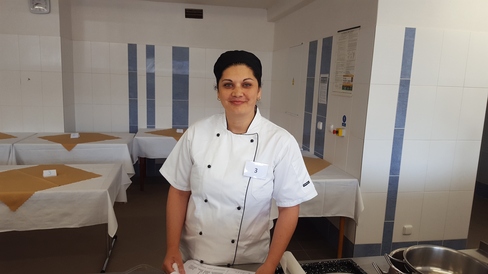
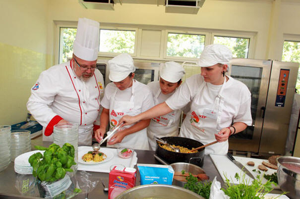

Mateřská škola, Praha 8, Na Korábě 2
Adresa: Na Korábě 2/ čp. 350, 180 00 Praha 8 – Libeň
Adresa 2. místa vzdělávání nebo školských služeb:
Lindnerova 1/ čp. 575, 180 00 Praha 8 – Libeň
IČO: 70919747
Ředitelka školy: Mgr. Hana Francová
Naše mateřské školy jsou školou rodinného typu, mezi naše
hlavní oblasti zájmů patří mravní, citová a tělesná výchova. Snažíme se
v dětech posilovat vlastní sebedůvěru, samostatnost a schopnost
rozhodování se, vše maximálně hravou formou.
Pro sjednocení těchto aktivit a dosažení našich cílů jsme
vytvořili vlastní vzdělávací program „NA JEDNÉ LODI – KORÁBU“, který
děti provází po celý rok.
Naše MŠ spolupracuje s Pedagogicko-psychologickou poradnou pro
Prahu 7 a 8 a v případě potřeby je možno zpracovat individuální výukový
plán.
Pro rodiče a pedagogický personál máme informační portál
Moodle, kde jsou uloženy všechny potřebné informace o aktuálním dění
v mateřské škole. Rodiče mají možnost být ve stálé interakci s pedagogy
i mezi sebou. Portál dále slouží jako neomezené úložiště pro metodické,
didaktické a odborné materiály, ke kterým mají rodiče neomezený přístup.
Školka nabízí prostornou zahradu parkového typu, jejíž
členitost umožňuje využití k funkčním, estetickým a prožitkovým
variantám výchovných činností a je vybavena moderními herními prvky a
nově také záhonky s plodinami, o které se děti samy starají.




